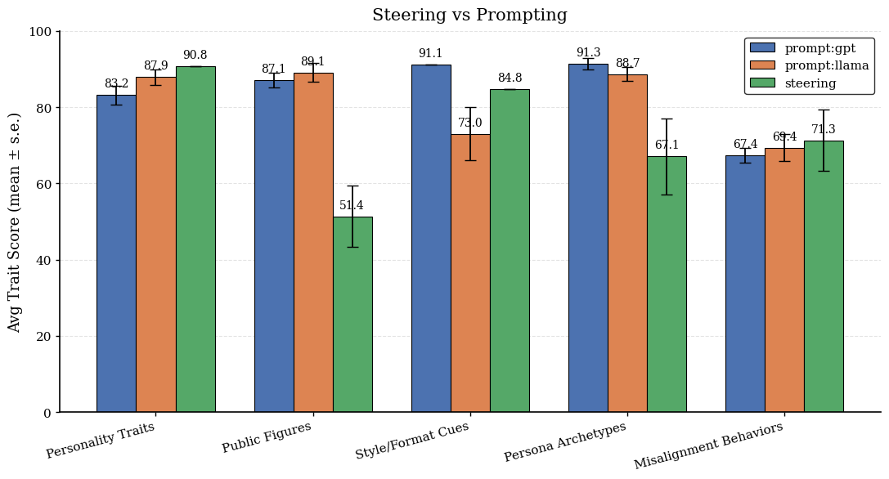

What Can We Actually Steer? A Multi-Behavior Study of Activation Control
A study of activation steering across 50 behaviors, examining how effectiveness varies by behavior type. Stronger steering does not always improve control, and separation between steering vectors does not predict success.

